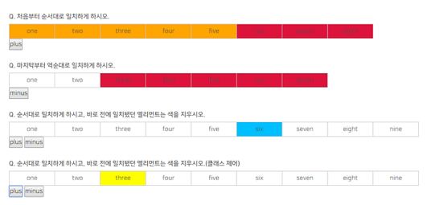
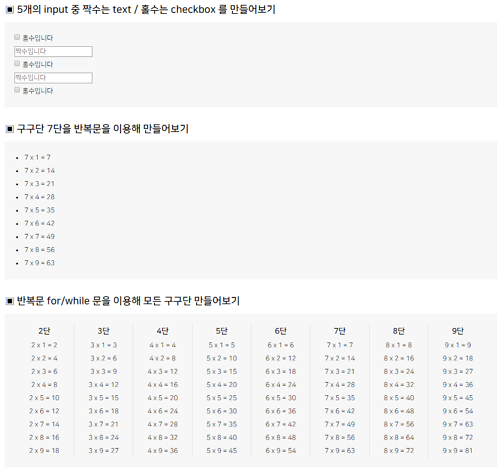
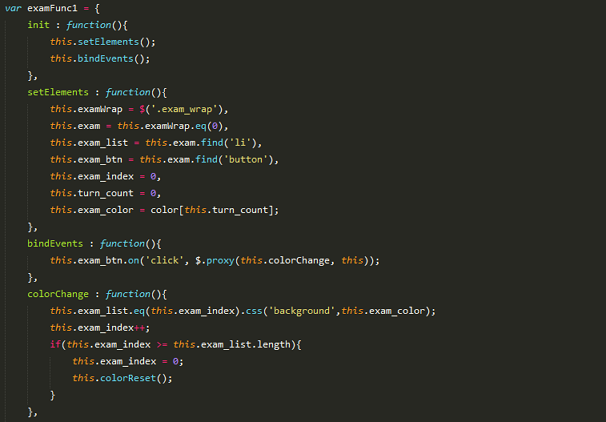
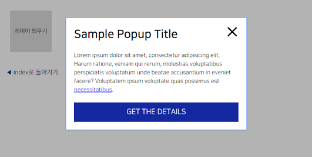
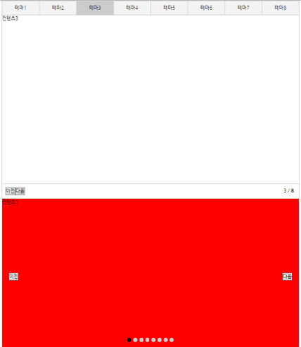
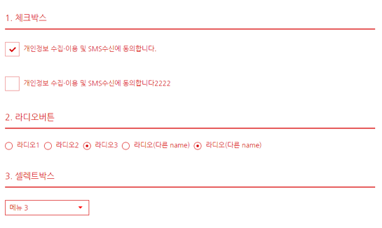

UIT센터 JS스터디 과제 회고 - 2017 상반기
■ 개요
- · 수행 기간 : 2017.03.09 ~ 2017.04.27
- · 멘토 : 이환 책임
- · 참여자 : 김민재 전임, 민경희 전임, 박성은 전임, 서재영 선임, 안혜원 전임, 이정선 전임, 조가윤 선임, 최다정 전임 (가나다순, 존칭 생략)
■ 목차
JavaScript, jQuery Seletor

■ 세부 사항
- · selector를 사용하여 선택되는 영역 익히기
- · Javascript와 jQuery의 차이점 비교
■ 성과
- · jQuery 선택자의 사용을 연습하고 jQuery의 간편함을 직접 체험
변수와 if문

■ 세부 사항
- · 버튼을 누를 때마다 요소의 속성이 순차적으로 변경
■ 구현 단계
- · 전체 요소의 갯수 받아오기
- - .length [▶jQuery API]
- · 순차적으로 index를 증감하여 속성 적용
- · if문으로 index 변경 조건 제어
■ 핵심 포인트
- · index의 증감을 어떻게 제어해야 하는지 감이 잘 오지 않으면 index를 수열로 적어보고 수식화한다.
- · 수식의 순서에 유의
■ 성과
- · 함수와 index 사용에 대한 기본 개념을 정립
반복문

■ 세부 사항
- · 개별적 input 태그 생성
- · text와 checkbox 번갈아 생성
- · while/for문을 사용하여 구구단 만들기
■ 핵심 포인트
- · for문/while문으로 구구단 만들기 - 구문이 반복되는 범위를 파악할 것
- · 태그 삽입하기
- - .append() [▶jQuery API]
- - .html() [▶jQuery API]
■ 성과
- · for문의 실행 메커니즘을 파악
- · 배열의 생성과 값 추가, 호출 방법을 습득
객체지향함수

■ 세부 사항
- · 기존 과제를 객체지향 프로그래밍(Object-oriented programming)으로 재구축
■ 핵심 포인트
- · 함수 호출 시 this의 혼선을 막기 위한 proxy 사용
- - $.proxy(this.{함수명}, this) [▶jQuery API]
■ 성과
- · 객체 지향 프로그래밍 구축 방식을 습득
레이어 팝업

■ 세부 사항
- · 버튼 클릭시 레이어 팝업 노출/닫힘
- · 레이어 외부 영역 클릭시 레이어 닫힘
- · 레이어가 띄워진 상태에서는 레이어 내에서만 focus가 loop돌게 설정(정방향/역방향)
■ 구현 단계
- · 레이어 띄우기 버튼 클릭시 레이어 팝업을 노출하고 focus를 layer팝업으로 옮김
- - tabindex 속성 부여
- - .focus() [▶jQuery API]
- · 레이어 내부 닫기 버튼 클릭시 레이어 팝업을 숨기고 focus를 해당 레이어를 띄웠던 버튼으로 옮김
- · 레이어 외부 영역 클릭시에도 닫기버튼 클릭시와 동일하게 처리
- · focus loop처리를 위해 focus 제어용 빈 태그 삽입
■ 이슈 및 주의할 점
- · focusout/clickout 이슈
- - 레이어팝업 외의 요소를 focus/click하였을 때 레이어팝업이 닫혀야 하는데, 그 외 요소가 유동적이어서 특정하기 어려움
- · 해결 방법
- - focus 제어용 빈 태그 삽입하기
- - outside event plugin 적용하기
- - outside event plugin을 focusin, click이벤트처럼 단순 적용하면, 해당 요소 밖에 있을 때에 계속해서 outside 이벤트가 실행되므로
outside이벤트는 별도로 선언해주어야 함
■ 성과
- · Outside Plugin의 사용법에 대해 습득
- · 접근성을 위한 focus관리 요령 습득
라인 플레이 - 랜덤 아바타
■ 세부 사항
- · 아바타 랜덤 노출
- · 버튼 클릭 시 이미 선택됐던 아바타를 제외한 다른 아바타가 랜덤 노출
- · 모든 아바타가 보인 다음에는 reset됨
■ 구현 단계
- · 아바타의 index 배열 만들기
- · 랜덤으로 index를 추출하여 해당 아바타 노출
- · 버튼 클릭 시 기존 index를 제외한 나머지 index를 랜덤으로 추출하여 아바타 노출
- · 아바다가 마지막으로 하나 남았을 때 index reset
■ 핵심 포인트
- · 배열 추가
- - array.push(item1, item2, ..., itemX) [▶w3schools.com]
- · 배열 삭제
- - array.splice(index,howmany,item1,.....,itemX) [▶w3schools.com]
- · 랜덤값 추출
- - Math.floor((Math.random() * 최대값) + 최소값); [▶w3schools.com]
- 최소값이 0일 경우 생략
■ 이슈 및 주의할 점
- · array의 값인 index와 array 값들의 index를 헷갈리지 말 것
- · 실제로 image나 image를 포함한 요소가 사라지는 것은 아님
- · 아바타가 리셋될 때, 기존 마지막 아바타와 리셋 후 처음으로 나타나는 아바타가 동일하지 않도록 처리하는 것이 필요
■ 성과
- · 배열의 개념을 이해하고, 이를 활용하는 방법을 습득
Tab과 Slide

■ 세부 사항
- · 각 탭을 클릭할 때 컨텐츠 노출 + hash값 변경
- · 이전/다음 버튼과 dot navigation을 클릭할 때 slide 컨텐츠 노출(default/fade/slide 방식)
- · 주소의 hash값에 따라 컨텐츠 노출 변경
■ 핵심 포인트
- · index 체크에 배열 활용하기 - 형제요소가 해당 요소만 있는 것이 아닐 경우, 배열에 해당 요소를 담아 currentTarget index를 가져옴
- · hash값 가져오기
- - window.location.hash [▶w3schools.com]
- · hash값 변경 event
- - hashchange [▶w3schools.com]
■ 성과
- · 실무에서 자주 사용하는 Tab과 Slide 인터랙션 구현
- · hash값에 따른 컨텐츠 제어 방식 습득
Plugin 만들기

■ 세부 사항
- · Form요소의 인터랙션 구현(체크박스/라디오버튼/셀렉트)
- · 같은 UIO가 여러 개인 경우에도 사용가능하도록 Plugin화
- · window객체를 이용하여 함수 작성
■ 핵심 포인트
- · name 속성에 따라 filtering하여 radio버튼의 group을 제어
- - .filter() [▶jQuery API]
- · 속성 : attr vs prop
- - .attr() [▶jQuery API]
- - .prop() [▶jQuery API]
- · method를 통한 event 제어
- - .triggerHandler(eventType) [▶jQuery API]
- · boolean값을 이용한 toggleClass제어
- - .toggleClass(className, state) [▶jQuery API]
- · Prototype
■ 성과
- · Form 요소의 인터랙션 구현방법 습득
- · Plugin의 생성 구조를 이해하고, Plugin 제작 방법을 습득
분석 주석 달기

■ 세부 사항
- · 구현된 레이어 팝업 Plugin javaScript에 분석 주석 달기
■ 핵심 포인트
- · show/hide시 system 오류 보정을 위한 시간차 설정
- - timeout 시작 : setTimeout(함수, 시간)
- - timeout 종료 : clearTimeout(setTimeout을 담은 변수)
- · 기능이 type별로 다른 plugin의 경우 기본 plugin 객체와 type별 매개변수 set를 담고 있는 객체를 연결하여 제작 (for 사용자 편의)
- · reInit 개념 : dom 로드 이후에 실행시킬 함수 모음. 확장성때문에 reInit(이름은 임의지정가능)으로 묶어줌. 주로 dom변경시 event 재설정 관련.
- · 특정 객체의 매개변수값 가져오기 : this.opts.paraMeter (권장) / this.opts['paraMeter']
■ 성과
- · Plugin의 생성 구조를 이해하고 제작할 수 있는 기반 지식을 습득